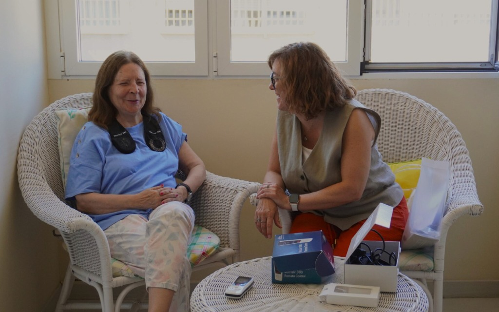
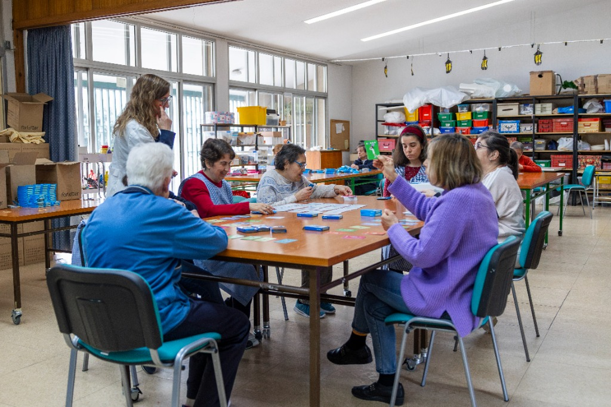
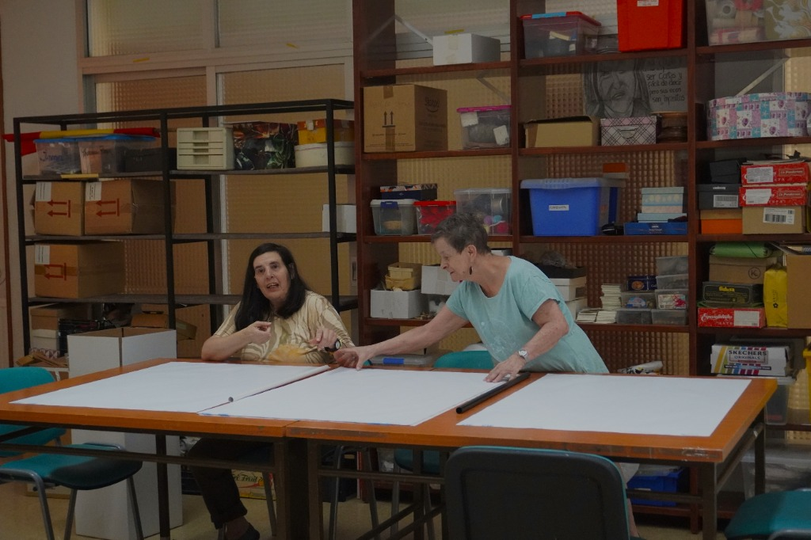
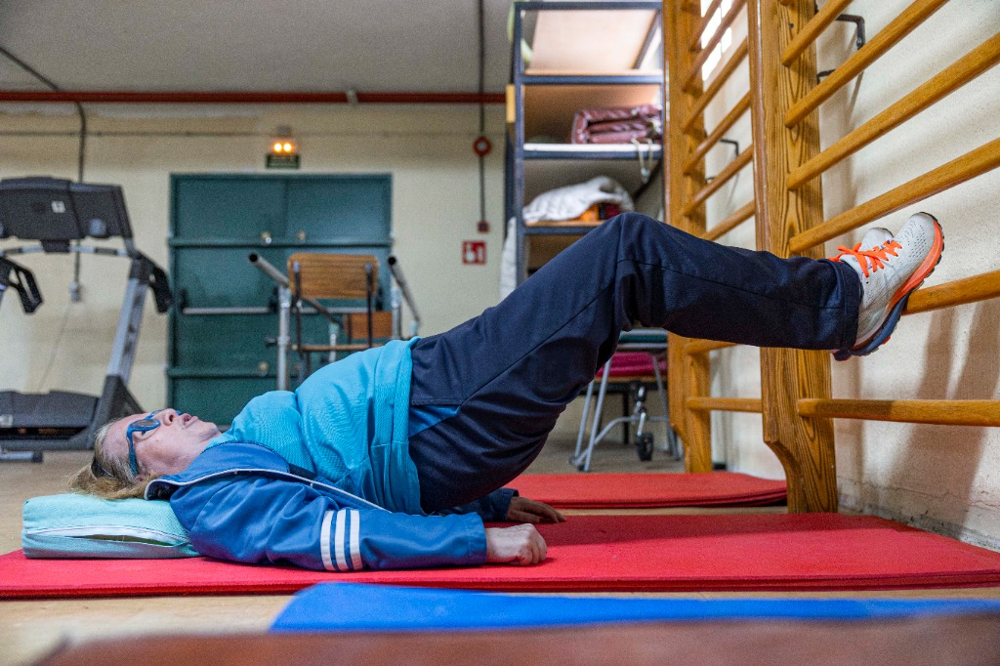
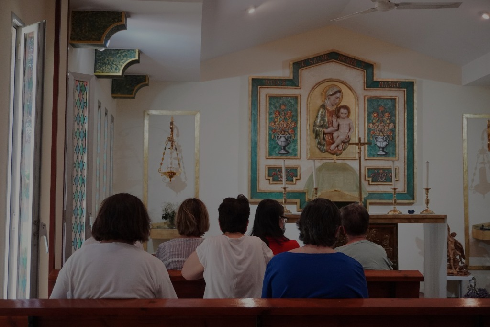

Construyendo futuro
Un hogar donde cada mujer pueda vivir con autonomía, intimidad y felicidad.
Un lugar que cuide hoy, y también mañana.
48 mujeres ya lo llaman casa. Hoy necesitamos transformarla para ellas.
Un proyecto nacido de la responsabilidad de garantizar un hogar digno
Desde hace más de 45 años, la Asociación Las Jaras, entidad sin ánimo de lucro y declarada de utilidad pública, acompaña a mujeres con discapacidad intelectual a lo largo de toda su vida.
Hoy, 48 mujeres viven aquí; para ellas, es su hogar; para sus familias, es su tranquilidad. Para nosotros, es nuestro compromiso más profundo. Las Jaras no es solo una residencia, es su hogar.
Pero el edificio que las acoge ya no responde a lo que ellas necesitan hoy, ni a lo que necesitarán mañana. Por eso hemos diseñado un proyecto de reforma integral: un nuevo modelo de hogar pensado para garantizar su autonomía, su intimidad y su bienestar en cada etapa de la vida.
"Para mí la residencia es mi casa. Me siento segura y querida en todo momento."
¿Ya tienes claro que quieres colaborar? Cada aportación transforma vidas.
→ Colabora ahoraPor qué este futuro
¿Por qué este cambio es imprescindible?
El centro lleva años adaptándose a las necesidades de sus residentes, pero ha llegado un momento en el que ya no basta con mejorar, hay que transformar.
Lo que está en juego no es un edificio, es la calidad de vida de las personas que viven en él.
Estas son las cinco razones fundamentales que hacen de esta reforma una necesidad impostergable:
Accesibilidad y autonomía
Moverse con libertad dentro de tu propia casa no debería ser un reto.
- Eliminar barreras arquitectónicas
- Facilitar la movilidad de las residentes
- Espacios adaptados a las nuevas necesidades
Envejecimiento digno
Muchas de las mujeres están envejeciendo y necesitan espacios que cuiden su salud y su bienestar.
- Adaptación de dormitorios y baños
- Espacios que garantizan dignidad y confort
- Atención al envejecimiento prematuro
Eficiencia y confort
Un hogar también es temperatura, luz, silencio. Mejorar el edificio es también mejorar su día a día.
- Reducción del consumo energético
- Mejora del aislamiento térmico
- Sostenibilidad a largo plazo
Preservar lo que realmente importa
Las Jaras es historia, comunidad y vínculo. Esta reforma no cambia su esencia: la protege.
- 45 años de historia merecen un hogar digno
- Mantener la esencia del proyecto original
- Proyectar hacia el futuro con los mismos valores
Cumplir hoy, cuidar mañana
La normativa ha cambiado, pero también la forma de entender los cuidados. Queremos un espacio preparado para el presente y para el futuro.
- Cumplimiento Orden 2680/2024 de la CAM
- Acreditación de calidad y seguridad
- Garantía de continuidad del servicio
Fases de la reforma
Un plan para hacerlo posible sin detener la vida
Sabemos que este proyecto es ambicioso, por eso lo hemos diseñado en tres fases, para que las mujeres puedan seguir viviendo en su hogar mientras lo transformamos. Cada fase es un paso más hacia un lugar mejor.
Empezamos por los espacios que comparten cada día, porque convivir mejor es vivir mejor.
Transformamos los espacios más íntimos, donde descansan, donde se cuidan. Porque sentirse bien empieza por sentirse en casa.
Cuidamos el edificio por fuera, para proteger todo lo que ocurre dentro.
¿Cómo lo financiamos?
Hacer realidad este proyecto requiere una inversión de 5 millones de euros. Ya hemos recorrido parte del camino, pero aún necesitamos ayuda para llegar al final. Cada aportación suma, cada colaboración nos acerca, pero, sobre todo, cada donación tiene un impacto directo en la vida de 48 mujeres.
✔ Conseguido
Empresas, Fundaciones y Colaboradores
Familias y Asociados
Subvenciones Públicas
Nuestros aliados y donantes
La fase 2026 ya está en marcha
Tu colaboración puede marcar la diferencia en la reforma de los espacios comunes este mismo año.
Galería
Así será nuestro hogar
Un vistazo al proyecto arquitectónico y a la vida que ya existe en Las Jaras, para que puedas imaginar lo que construiremos juntos.
Renders del proyecto
La vida en Las Jaras hoy





Cada imagen que ves podría ser una realidad muy pronto. ¿Nos ayudas a hacerlo posible?
→ Sí, quiero colaborarCómo colaborar
Tú también puedes
ser parte de este hogar
Este proyecto no es solo nuestro, es de todas las personas que creen en una sociedad más justa, más inclusiva y humana. Hay muchas formas de colaborar, todas son importantes.
No importa el tamaño de tu aportación, lo importante es lo que hace posible.
💰 Donaciones monetarias
- Mejorar la eficiencia energética
- Adaptar un dormitorio
- Renovar los espacios de vida común
- Las donaciones tienen ventajas fiscales
🤝 Actividades de mecenazgo
- Organizar un evento solidario
- Recaudar fondos con empleados y clientes
- Visibilizar tu compromiso con la inclusión
🫶 Voluntariado corporativo
- Actividades de ocio compartido con las usuarias
- Visitas de sensibilización a tu organización
- Grupos de trabajo y mantenimiento
🎁 Donaciones en especie
- Materiales de construcción o rehabilitación
- Equipamientos para los nuevos espacios
- Servicios profesionales (arquitectura, comunicación...)
Este proyecto se construye con ayudas grandes y también pequeñas, y sin esa suma simplemente no sería posible avanzar.
Lo importante no es cuánto se aporta, sino qué ocurre cuando no se aporta: los cambios se frenan, los espacios no se transforman y muchas mejoras no llegan.
Cada aportación forma parte de algo mucho más grande y es la que permite que este proyecto siga en marcha, paso a paso. Tu ayuda, por pequeña que parezca, no es simbólica, es lo que hace que el proyecto avance de verdad.
Acciones de captación
Cuando muchas personas se unen, el cambio empieza a ser real
Detrás de este proyecto hay personas que ya han dado el paso. Iniciativas que suman, que movilizan y que están haciendo posible el cambio:
Teatro solidario
Función benéfica con entrada a precio libre a favor del proyecto de reforma de Las Jaras.
Las Tres Cruces
Iniciativa solidaria vinculada a la tradición y la comunidad de Las Jaras.
El Cuento Solidario
Proyecto editorial con ilustraciones de las usuarias para recaudar fondos para la reforma.
Próxima iniciativa
¿Quieres organizar tu propio evento? Contacta con nosotros y lo hacemos juntos.
Próxima iniciativa
Cada evento suma. Toda la comunidad puede contribuir a este sueño colectivo.
Próxima iniciativa
Inscríbete en nuestra newsletter para conocer las próximas acciones solidarias.
¿Tienes una idea para recaudar fondos?
Cuéntanos tu iniciativa y la hacemos realidad juntos. Cualquier acción suma a este proyecto colectivo.
Un hogar, un propósito
Construyendo futuro
...un futuro digno y feliz.
Juntos podemos construir el hogar que Las Jaras y sus 48 mujeres merecen. Cada aportación, por pequeña que sea, se transforma en dignidad, en autonomía, en felicidad.
Datos de donación
Transferencia
Asociación Las Jaras
IBAN: ES66 2100 2120 8102 0080 7266
CaixaBank
BIZUM ONG: 12007
Contacto directo
✉️ apadreslasjaras@apadreslasjaras.com
📍 Ctra. de Boadilla (M516), 98
28222 Majadahonda